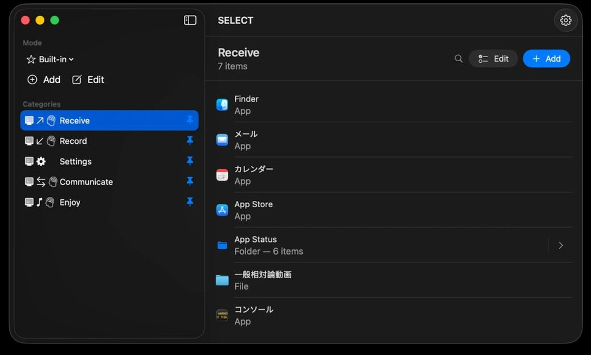
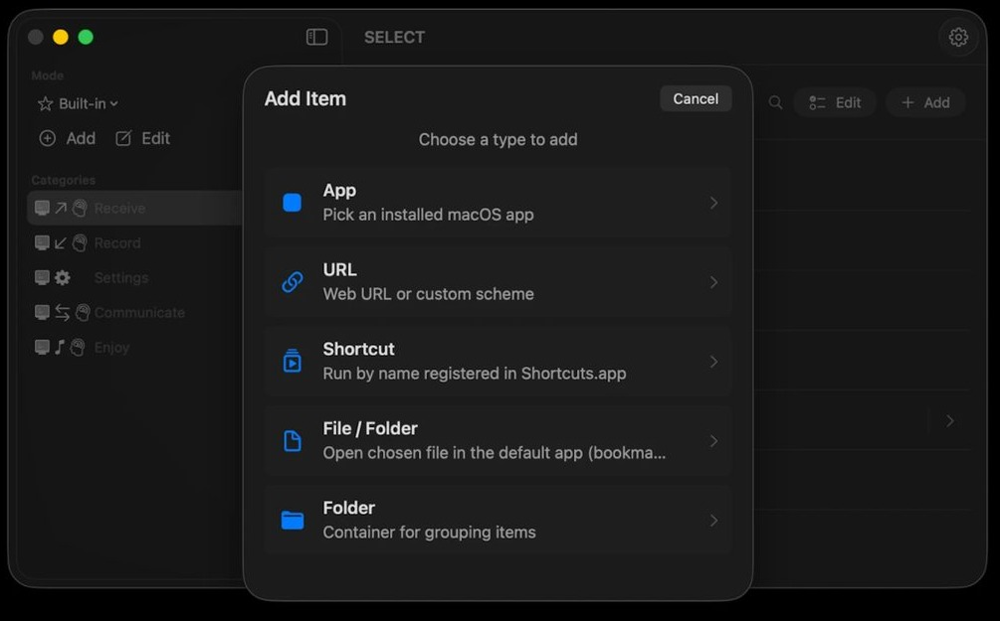
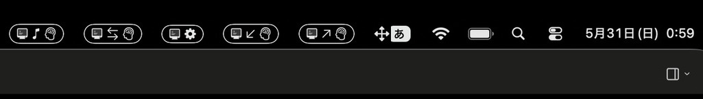

SELECT
情報の渦に取り込まれるな。
どのアプリを使うかは
いつだって君自身の
手の平の上にある。
 受信する
受信する
 記録する
記録する
 調整する
調整する
 対話する
対話する
 楽しむ
楽しむ
情報の渦に取り込まれるな。
どのアプリを使うかは
いつだって君自身の
手の平の上にある。
受信する
記録する
調整する
対話する
楽しむ
ホーム画面を開いた瞬間、
脳がクラッシュする。
外の世界から自分に向かって届くものを受け取る。 通知・メッセージ・予定・ニュース・タイムライン。 「読む」「見る」「知る」が中心の行為。
頭の中にあるもの、目の前で起きたことを、外に出して残す。 書く、撮る、録る、保存する。 「自分の内側 → 外」へ向かう流れ。
誰かと双方向にやり取りする。 受信と発信が往復し続ける場。一方通行の「受信」とも、内側へ向かう「記録」とも違う、人と人の間。
目的のためではなく、自分の余暇のために使う。 音楽を聴く、動画を観る、ゲームをする、コンテンツを浴びる。 「消費」する時間を、それと自覚して取りに行く。
アプリ・デバイス・自分の周辺環境を整える。 設定を変える、残高を確認する、状態を見て手を入れる。 受動でも能動でもない、「整える」行為。
プラットフォーム別に。
モード切替、カテゴリ整理、一括操作 — ウィジェットの裏側で動くすべてを管理。

アプリ、ショートカット、Web、フォルダ。App Store 検索から、Shortcuts.app 連携から。

ウィジェットを置けば、アプリを開かずに目的のアイテムへ。タップひとつで、意図したものに直行。


モードとカテゴリを左で切替え、右にアイテム一覧。ダブルクリックで起動、フォルダはドリルダウン。

アプリ、URL、ショートカット、ファイル/フォルダ、フォルダ。1 つの「追加」ボタンから全部。

ピンしたカテゴリはメニューバーに常駐。アプリを開かなくても、画面上端から直接アクセス。

代替ホームランチャーとして動作。デバイスのホームボタンを押すと、5 つの動詞が円形に並んだ画面が直接表示される。

中央のフィギュアを囲んで、Exchange / Receive / Record / Tune Device / Enjoy が円形配置。意図を視覚で選ぶ、SELECT らしい入り口。

Out / Home / Work / Before Bed — シチュエーション別に独立したモードを作成。それぞれにカテゴリ構成と表示設定を保持できる。

無料で配信中。今日から、5 つの動詞で整理する。